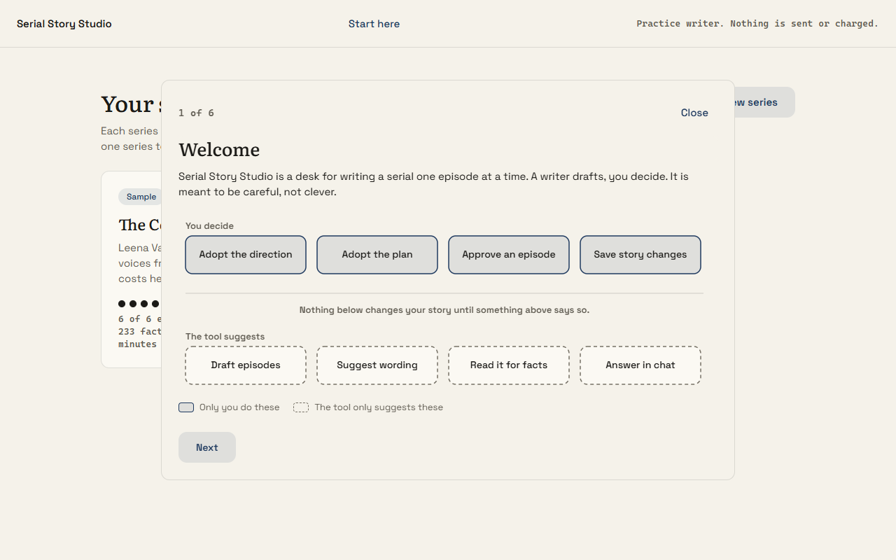
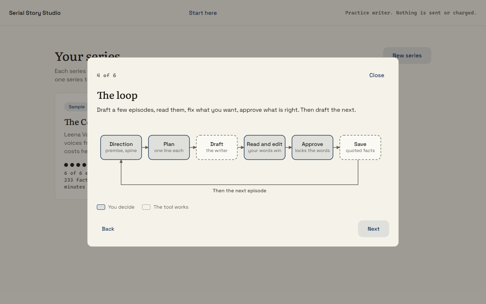
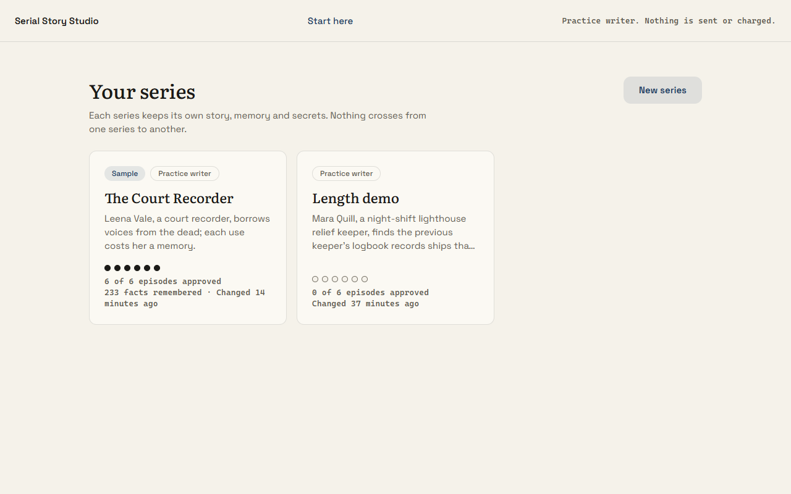
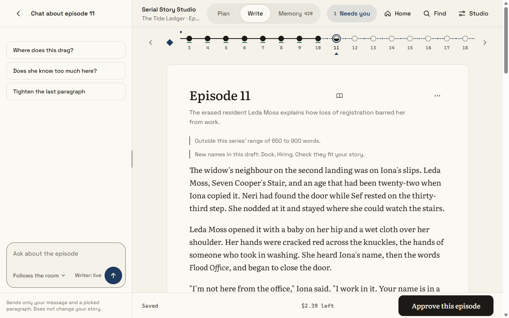
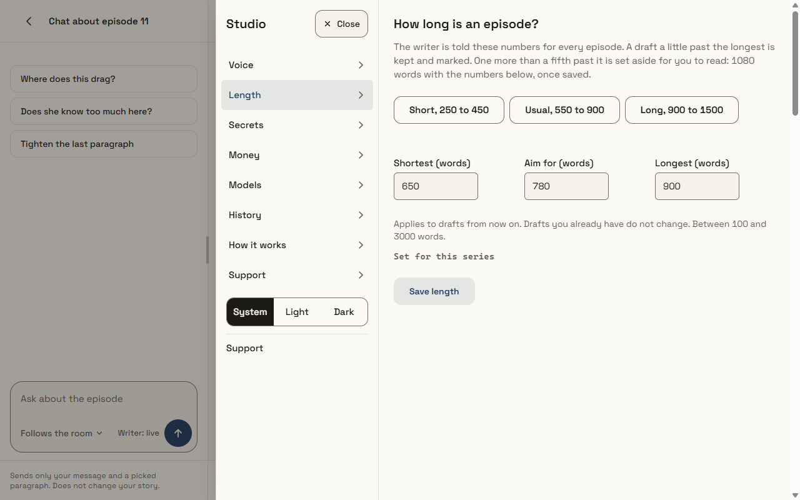
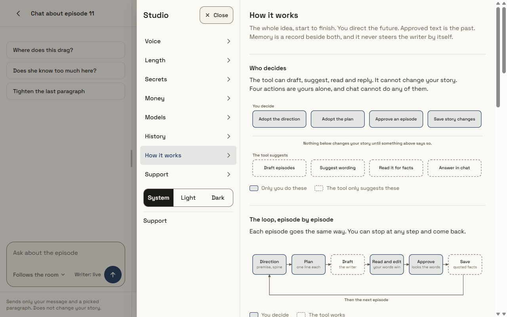
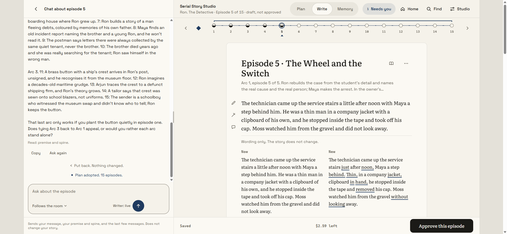

Serial Story Studio, beta report
Latest version. 8 October 2026, written in IST. Branch feature/ledger-first, 29 commits since the previous report, 354 tests passing in the last full run. Every number below comes from a file, a spend log or a test run this session. Anything not verified says so.
1. What a tester gets
A local web app, run from a folder on your own computer. You write a direction (premise and spine), plan episodes one line each, ask a writer to draft them, read and edit, approve, and the approved text is read into a memory of facts with quotes. The writer never sees Memory, secrets or chat. Four actions are yours alone and chat cannot do any of them: adopt the direction, adopt the plan, approve an episode, save story changes.
Two ways to run it. Practice mode needs no key and sends nothing anywhere: a scripted writer produces filler so you can judge the desk. Live writers use Merge Gateway and need a separately supplied key, with a spend limit you set per series.
2. What is new since the 4 October report
| Area | What changed | Where it is proved |
|---|---|---|
| Shelf of series | Home page lists series. Each has its own folder, database, plan, memory and secrets. A sample series is included. | tests/test_v1_shelf.py |
| Live series | Each live series has its own spend limit (default $3, never above $5) and its own spend log. Restarting does not reset what was spent. A live series cannot run on the practice writer by mistake. | tests/test_v1_shelf_live.py, test_v1_merge_provider.py |
| Long plans | Plans of 100 episodes work. The Tide Ledger has 100 planned lines. | Author run, final snapshot |
| Recovery | Resuming a paused run keeps episodes already drafted. A paid draft that was too long is readable, and the author can use it and trim it. Both were broken in the first author run and fixed. | Author retest, items E5 and E6 |
| Length | The author sets shortest, aim and longest per series (Short, Usual, Long presets, any value from 100 to 3000). The writer is told the numbers. A draft up to a fifth past the longest is kept and marked. Longer is set aside, still readable. | Author retest E2 to E4; 250/350/450 gave 388 and 394 words |
| Fewer invented facts | The writer's standing instructions now have a Continuity and Grounding section. After each draft the desk lists names that appear in no earlier text. | tests/test_v1_grounding.py; section 5 below |
| Onboarding | A six-step walkthrough opens the first time and from the Start here button. It ends by opening the new series form. | Browser check this session |
| How it works | A page inside Studio explains the logic with diagrams: who decides, the loop, what the writer is shown, from draft to memory, length, money and safety. On a phone the diagrams are replaced by the same content as short lists. | Screenshots below |
| Author tools | A command line client for the same desk (scripts/author_client.py) so an author can work from a terminal. It goes through the same commands and the same checks and never touches the key. | tests/test_author_client.py |
| Real chat | Chat is a real conversation with the writer (Claude Opus 5.5): it remembers the last few messages and always knows your premise and spine. Answers are plain prose. It still changes nothing by itself. | tests/test_v1_review3.py; two live chats |
| Episode titles | The writer names each draft (a title line on top, stripped before the prose is stored). The title shows in the Write header and the episode list. | tests/test_v1_titles.py; all 15 Ron episodes drafted live, titles on 2 to 15 |
| Cut-off drafts can be retried | An answer cut off mid-episode (the writer ran out of room) is billed, discarded, and the run pauses with a plain Try again. Resuming drafts the episode. Before, this surfaced as an unconfirmed charge that needed settling in Money. | tests/test_v1_titles.py; Ron episode 5 failed this way live, then drafted on resume |
| Cleaner rewrites | A "tighten it" rewrite comes back as the passage alone: any preamble ("Here it is:") or echo of the original paragraph is stripped, and an answer that is only the original is rejected instead of offered. | tests/test_v1_merge_provider.py; live check on Ron episode 5 |
| Fewer confusing buttons | Chat replies no longer offer Use this buttons that placed suggestions into the plan or text. Copy and Ask again remain; nothing is placed for you. | tests/test_v1_ui_static.py |
| Walkthrough dead button | On Windows a stale copy of the program could keep the port while a new one started, and the Start button then did nothing. A port is now held exclusively and a second start says so in plain words. | tests/test_server_port.py |
3. Evidence from a real author run
An independent agent-assisted test session acted as the author of "The Tide Ledger" using only the desk and its client. It read the instructions, set the length, drafted, edited and approved. A second, fresh reviewer then read the ten approved episodes with no production notes. The literary review is included at demo/the-tide-ledger/INDEPENDENT-REVIEW.md.
| Episode | 1 | 2 | 3 | 4 | 5 | 6 | 7 | 8 | 9 | 10 |
|---|---|---|---|---|---|---|---|---|---|---|
| Words approved | 784 | 829 | 799 | 783 | 776 | 873 | 871 | 895 | 882 | 888 |
Series range 650 to 900, aim 780. Counts from the independent reviewer.
| Cost | USD |
|---|---|
| First run (episodes 1 to 5 and related calls) | 0.3578 |
| Four drafting calls, episodes 7 to 10 | 0.1730 |
| Five memory reads, episodes 6 to 10 | 0.0112 |
| The Tide Ledger, total of $3 limit | 0.5420 |
| The Last Tram Ticket, two short episodes of a $0.50 limit | 0.0379 |
| Episode 11 of the Tide Ledger, drafted this session to test the new prompt, not approved | 0.0719 |
One episode costs about $0.04 to $0.07 to draft. The cost rises with the number of earlier episodes sent in full: episode 11, with ten earlier episodes sent, cost $0.0719.
The independent verdict
REVISE. A compelling, controlled civic mystery with a credible central relationship and unusually tangible paperwork. Revision is warranted because the destruction deadline loses clarity at the critical overnight transition, the planned authentication remains incomplete, and several evidentiary assertions need firmer support. These are local problems, not grounds to discard the arc.
From the reviewer's saved review (verbatim sentences). The reviewer also named episodes 1 and 7 as strongest and episode 6 as weakest.
4. What the author run found, and what we did
| Finding | State |
|---|---|
| Resume rewrote episodes already drafted | Fixed Retested: episodes 1 to 6 kept, only 7 to 10 drafted. |
| A paid over-length draft could not be read | Fixed Visible in full, can be used and trimmed. |
| No numeric length control | Fixed Studio, Length and a Change link on the direction. |
| Pause text said a draft was set aside as over the limit after the limit was raised | Fixed in b9f306d, covered by a test. Not retested live by the author. |
| Client exit codes hid failures | Fixed in b9f306d. 1 means refused, 3 means paused. Not retested live. |
| Browser stayed stale after the client changed the series | Improved The page refreshes quietly when you return to it and every 15 seconds. Not retested live. |
| The length gauge showed only the aim, not the series range | Fixed in b9f306d: the gauge now spans shortest to longest. Not retested live. |
| Memory is a long list, some quotes are weak evidence | Open A compact view is not built. |
| A long plan is one flat list | Open Named arcs and a default "Draft next 5" are not built. Waiting on a decision. |
| Story problems the reviewer named (deadline gap, episode 6 authentication, episode 10 neighbours) | Author's job These are in the story, not the tool. Suggested edits are in the audit below. Nothing was changed. |
5. Invented facts: my own audit and what changed
I read all ten episodes against the saved direction. The full table is in docs/review/TIDE-LEDGER-HALLUCINATION-AUDIT.md. In short:
- No new named character was invented. The cast held for ten episodes.
- The writer did invent places and offices that the direction never gave it (Tallow Quay, Old Cut, Dyer's Bridge, Haskett and Dunn, Customs Library, Reclamation Committee, Aldermoor, the Lanterns). They stayed consistent once introduced.
- Three claims were unsupported by what the story had shown: "her neighbours say so" (episode 10), a lockkeeper who "did hear of" the inspector (episode 9), "Those were your neighbours" (episode 8).
- A deadline (Thursday low water) is set up in episode 7 and then not reckoned with.
What changed. The writer's standing instructions now say: earlier episodes are fixed and must not be contradicted, the direction wins a conflict, show where evidence comes from, track who knows what and how, copy numbers exactly, add a place or office only when the scene needs it, do not settle open questions, and when unsure leave it vague. The desk also lists names in a draft that appear in no earlier text.
6. The product, as a tester sees it







7. Try the code
Run python try_it.py --open inside the repository's source folder for free practice mode. For live generation with the separately supplied evaluation key, follow the live evaluation guide. The key is not stored in the repository. The provider-side review budget and local per-series budget are separate.
8. Not verified
- Running out of money mid-run, restart in the middle of a paid run, and the secret check on a real live draft have not been exercised live.
- The Free plan of Merge has not been tried with this program.
- The new instructions have been tried on one live draft. There is no before and after measurement.
- The new-name list only finds capitalised words. It cannot find a wrong date, number or relationship.
- The author-run fixes made after the retest (pause wording, exit codes, quiet refresh) are covered by tests, not by a second author run.
- I did not run the beta zip on a Mac or Linux machine, or on a computer without my Python setup.
- Episodes drafted before titles existed (Ron episode 1) have no title until redrafted; nothing invents one after the fact.
- Three of the fifteen Ron episodes ran a little past the 900-word top of their range (915 to 980 words). They are kept and marked, within the stop threshold; the author trims or redrafts.
- Resuming a run after an upstream edit re-drafts the episodes in between (they must follow the words actually on the page). This costs extra drafting calls; Ron episodes 2 to 4 re-drafted this way for about $0.12.
- The title and cleanup rules rely on the writer following the format. A missing or malformed title simply means no title; a stray preamble the cleaner does not recognise would still show.